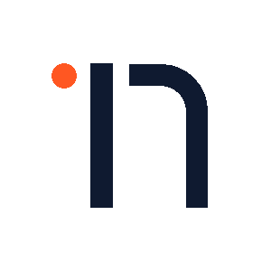

用界面 诉说故事；以设计 打动心灵
我是 17，一名 UI/UX 设计师 & 产品构建者。
专注于产品策略、交互架构与设计系统的全链路方案；善用 AI Coding 实现从构思到代码的高速闭环，在严谨秩序与敏捷构建中打磨极致体验。

我是 17，一名 UI/UX 设计师 & 产品构建者。
专注于产品策略、交互架构与设计系统的全链路方案；善用 AI Coding 实现从构思到代码的高速闭环，在严谨秩序与敏捷构建中打磨极致体验。


语言是用户与数字界面建立信任的第一触点。专注于克制友好的微文案与精准的状态提示，在第一秒彻底抹平认知负荷。
优秀的设计文案如同空气：顺畅时自然无感，关键节点时给出确定的掌控感与安全指引。